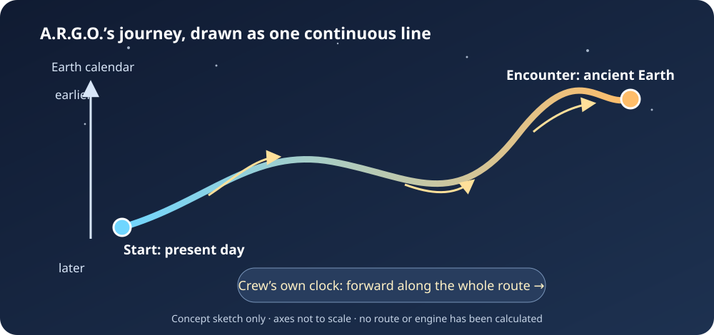

Travelling Through Space In Time#
A.R.G.O. — Astrarium Research & Galactic Observatory
Start here: what are we trying to do?#
Imagine drawing a line that shows where a ship is at every moment. That line is its journey. Now imagine the planets, moons, Earth, and Sun moving while the ship travels. A safe route has to follow the moving sky and keep the ship away from things it could hit.
In this book’s mission, A.R.G.O. will travel through space and back through time until people on Earth see it as the Star of Bethlehem. We also ask whether the same idea could help explain reports of strange lights. We treat that as the mission story we are trying to model. The old story does not tell us that a ship was there, or give us enough measurements to know exactly where or when the light appeared.
The hard part is that Earth has been moving too. It spins, circles the Sun, and travels with the Sun through the Milky Way. A.R.G.O. cannot simply pick an old date on a clock and stay at the same place in space. Its route must connect its starting place and time to its destination place and time without a jump.


Fig. 1 One way to picture the mission: Earth’s date moves toward the past along the route, while the clock aboard A.R.G.O. keeps ticking forward. This is a labeled concept sketch; its axes and route are not to scale and it is not a calculated trajectory.#
Astrarium can already show parts of the moving sky and draw example routes. It cannot yet calculate a working time-travel engine or prove that a real ship could make this trip. The equations in this book let us ask careful questions: What would a route need to do? What might it pass near? What would people see from Earth? Which answers come from math, and which parts are still unknown?
Try the interactive 3D journey#
Move the year slider to watch the planets change places. Press Play to run the years, drag the scene to turn it, and use the scroll wheel or trackpad to zoom. The pale line shows A.R.G.O.’s example route.
The planets are drawn at squished distances so they fit on screen. A.R.G.O.’s line is an illustration, not a solved or collision-checked flight plan. Open the scene with its full explanation.
Explore the interactive graphs#
The book has two more hands-on calculators. In the time-loop calculator, drag the lookback slider to see how the chosen flat-model first-leg distance changes with the target date. In the saucer-shaped energy calculator, rotate the surface plot and hover over it to compare bubble size and wall thickness. Both notebooks also include line graphs you can zoom, pan, and inspect by hovering. Their captions explain the model assumptions and why these calculations are not a flight plan or engine design.
A few useful words#
Worldline: the ship’s path through space and time, with a point for every moment of its journey.
Spacetime: a way to describe both where and when something happens.
Epoch: the date and time used for an event in the sky.
Proper time: time measured by a clock travelling with the crew. In the mission model, this clock keeps moving forward even during a trip to an earlier Earth date.
Collision check: a search for places where the ship could hit a planet, moon, satellite, or other hazard along its whole route.
Model: a set of rules and equations used to calculate an example. A model can help us learn without proving that nature or a machine works that way.
CTC: short for “closed timelike curve.” It is a name for a possible path in some equations that loops back to an earlier event. The name does not mean anyone has built a time machine.
Metric: the equations that tell us how to measure distances and times in a model of spacetime.
Ephemeris: a table or calculation showing where an object in space is at different times.
Stress-energy: a physics description of matter, energy, and pressure that can affect the shape of spacetime.
Choose where to begin#
Read the A.R.G.O. mission story to learn what the Star of Bethlehem journey asks us to explain.
Open the interactive solar-system scene and move the time slider to watch the planets change places.
See how a navigator might plan a route and look for hazards.
Visit the physics chapter for the equations and the limits of the current ideas.
Try the two-bubble route calculator and saucer-shaped energy calculation. These are advanced activities; each explains what its answer does and does not mean.
For more, explore the historical sky, spacecraft and terrain records, observation sources, and validation checks. The Phoenix Lights discussion is in the mission story’s appendix.
You can also run the calculators in Google Colab: two-bubble route · saucer-shaped energy.
What have we learned so far?#
Some published equations describe a continuous path that loops back to an earlier event in a specially chosen spacetime. Our calculator checks parts of that math. It does not show how to build the spacetime or a ship that can use it.
A second calculation estimates one kind of energy density for a simplified saucer-shaped bubble. Its result is not the amount of fuel a ship needs, and it is not a design for a real engine.
Our scene lets you see planets move while the date changes. The drawn A.R.G.O. route is an example line, not a solved trip. The route has not been checked against every object, and the Star of Bethlehem story leaves the date and viewing direction uncertain.
The book marks four kinds of statements:
Mission story: the journey we want to model.
Calculation: an answer that follows from stated equations and inputs.
Picture or simulation: a way to explore an idea on screen.
Unknown: something the equations, evidence, or current Astrarium code cannot yet answer.
Figures in the book are generated from the calculations when the book is built. Their inputs are examples unless a source is named. Keep these labels in mind as you explore: a picture of a route is a way to ask a question, not proof that a ship has flown it.